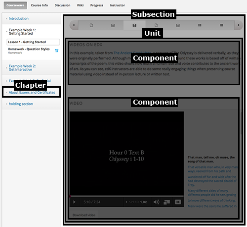

{% verbatim %}

<script id="layout-instruction-template" type="text/x-handlebars-template">
<div>
Welcome to the edX to Canvas authoring tool, which allows you to embed edX content
into your Canvas course. Most edX courseware can be added as Module Items
in Canvas, and edX problem types can optionally be embedded as assignments which
will appear in your Canvas gradebook.
<hr>
<p>
The tool window is divided into three columns (not counting the familiar Canvas
navigation):
</p><p>
To the left is the edX content.
</p><p>
To the right are your Canvas modules.
</p><p>
And in the center is the content preview, where you are reading these instructions.
</p>
<hr>
</div>
</script>

<script id="add-canvas-modules" type="text/x-handlebars-template">
<p>
Before we can add content, you need to add some modules to your course. Use the
Canvas modules page (linked from the far left navigation bar) to add one or more
modules to your course, and then come back to this page using the Add edX Content
link on the navigation bar.
</p>
</script>

<script id="existing-modules" type="text/x-handlebars-template">
<p>
To get started, click on one of the Canvas modules to the right to expand its
contents.
</p>
</script>

<script id="canvas-modules" type="text/x-handlebars-template">
<div>
A Canvas module contains module items, each of which presents a student with
course content, whether that is an assignment, a discussion forum or an external
web page. The module items that we will create will link to an external tool; in
our case that tool is edX.
<hr>
<p>
Next, we will find the edX content to display in Canvas. Choose an edX course
from the menu on the left.
</p>
</div>
</script>

<script id="edx-course-structure" type="text/x-handlebars-template">
<div>
You're now looking at the course content for {{edx_course_name}}. The course is
divided up into chapters, each of which contains edX courseware.
<p>

</p>
Click on one of the chapters to focus on its contents.
</div>
</script>

<script id="edx-course-chapters" type="text/x-handlebars-template">
<div>
</div>
</script>

<script id="edx-subsections" type="text/x-handlebars-template">
<div>
EdX content can be embedded in Canvas at the subsection, unit or component level.
Use the zoom icon to preview edX content in this center panel, and to navigate
through the edX course structure. You can install edX content by dragging it to
a Canvas module.
</p><p>

</p>
</div>
</script>

<script id="edx-course-layout"  type="text/x-handlebars-template">
    
</script>

<script id="autopopulate_overview"  type="text/x-handlebars-template">
    This is the autopopulate overview section. Choose between the three granularities.
</script>

<script id="autopopulate_subsection"  type="text/x-handlebars-template">
    Populate at the section level
</script>

<script id="autopopulate_unit"  type="text/x-handlebars-template">
    Populate at the unit level
</script>

<script id="autopopulate_component"  type="text/x-handlebars-template">
    Populate at the component level
</script>


{% endverbatim %}

